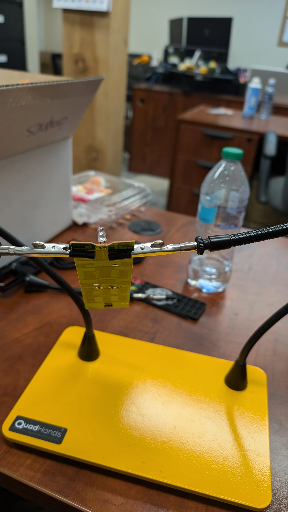
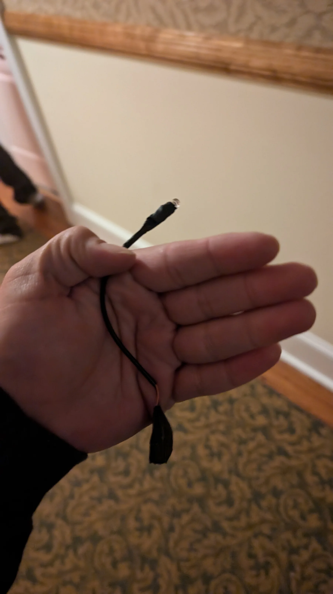
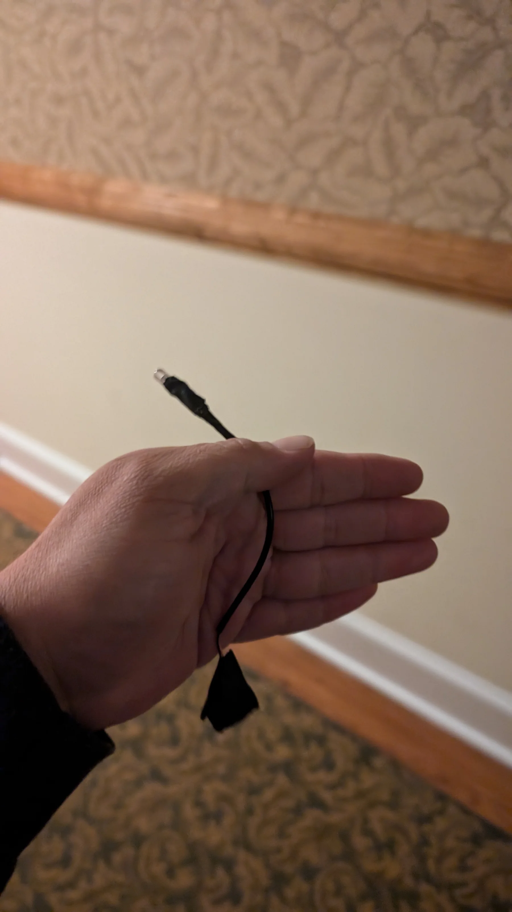
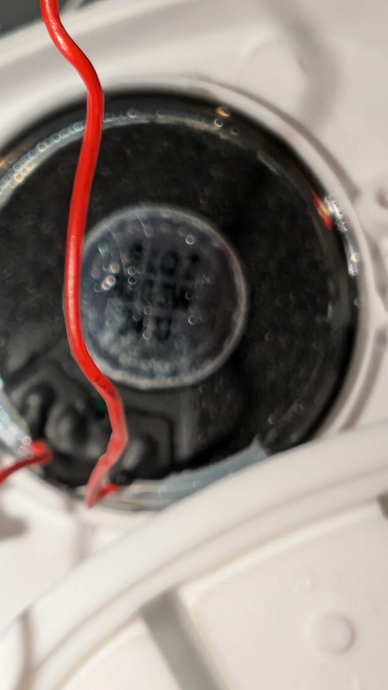
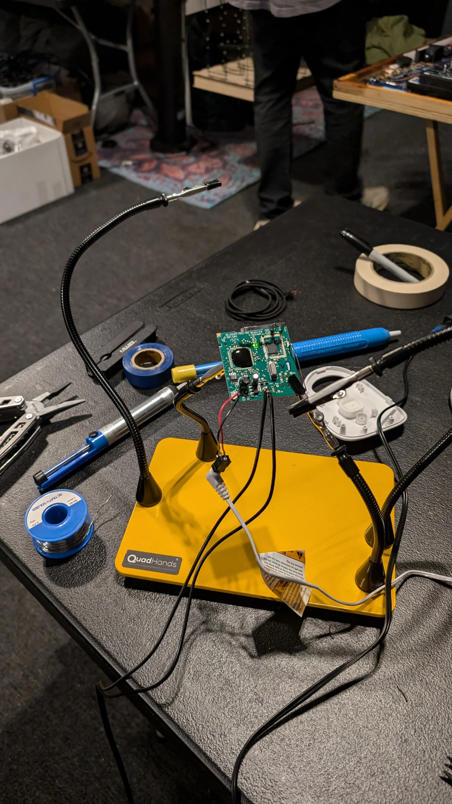

Peacock | Stanley Hotel
Technical design and onsite execution for an immersive theatrical / haunted house experience, coordinating visual and audio effects and building small custom tools when conventional equipment was not the right answer.
Small inventions for specific theatrical problems
The project required technical systems that could disappear into the environment and respond at precise moments. Instead of treating every problem as an equipment purchase, we modified inexpensive consumer devices and built purpose specific prototypes.
This kind of work sits between show programming, fabrication, electronics and improvisation. The goal is always the audience experience, not the gadget itself.
Triggered audio using modified baby monitors
Baby monitors were converted into hidden speakers so that specific audio cues could play at a specific time or trigger. The consumer object became a small, distributed show control device that could be hidden inside the theatrical environment.



DIY infrared visibility tool
Actors needed to be visible to IR cameras in near total darkness without adding visible light to the scene. We made a compact battery powered infrared illuminator using an IR source adapted from a remote control. It functioned as an invisible work light for the camera system.

